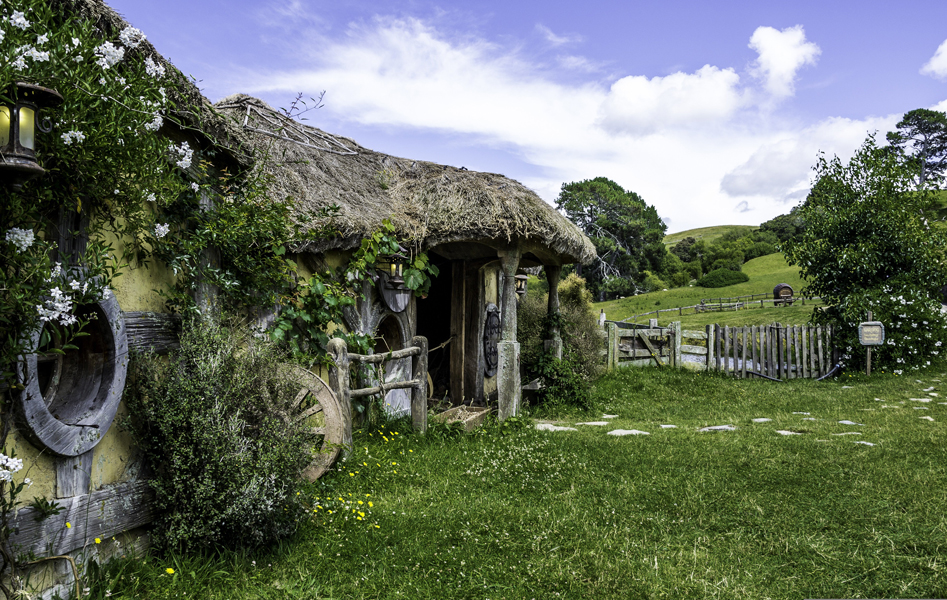

Waikato's Hobbit Hole!
Waikato Tourist Location
Step Into Middle-earth!
Located approximately 45 minutes from Hamilton, this Hobbit Hole is
a unique attraction for visitors interested in nature, fantasy, and
the world of The Lord of the Rings. The area features a Hobbit-style
structure surrounded by beautiful Waikato countryside, creating a
peaceful and memorable setting for visitors.
Visitors can explore the surrounding area, take photographs, and
enjoy the scenery. The Hobbit Hole makes an interesting stop for
travellers exploring the Waikato region and is particularly appealing
to fans of The Lord of the Rings and The Hobbit. The surrounding
countryside also provides opportunities to enjoy the natural
landscape away from the busier parts of Hamilton.
Because the attraction is located outside Hamilton, visitors should
consider the additional travel time and transport costs when planning
their trip. The cost of visiting may also depend on whether the
attraction is part of a guided tour or a private experience.
Facts:
- Located approximately 45 minutes from Hamilton
- Located in the Waikato region
- Hobbit-style attraction
- Surrounded by New Zealand countryside
- Popular with Lord of the Rings fans
- Great location for photography
- Suitable for visitors interested in fantasy and nature
Costs:
- Entry: Check with the attraction before visiting
- Estimated food costs: $10-$30 per person
- Estimated fuel costs from Hamilton: $15-$30 return
- Guided tour costs: Varies depending on the tour
- Estimated total visit cost: $25-$100+ per person